CODING AGENTS AS PIXEL WORLD MODELS
traex/DeepSeek-V4.1-Flash · pcve_0000
点击播放 · 原生 RGB 像素
编辑前的完整原视频
上方为编辑结果；原视频是模型获准使用的输入。下方为逐轮保存的编辑候选。
逐轮保存的候选
回放视频、检查图与代码变化。
每份候选均可单独播放。实际图片检查记录在下方工具轨迹中。
候选 01播放与检查图
点击播放 · 原生 RGB 像素

展开代码变化
--- 上一保存版本
+++ 本次保存版本
@@ -0,0 +1,275 @@
+"""Render the red-mallet mass counterfactual from the source pixels.
+
+The source frames contain two moving strikers. The blue striker reaches the
+red striker on frame 16 (1-based). Frames 1-16 are therefore factual history;
+from the contact onward the red striker is re-rendered as a four-times-heavier
+body. The table, markings, puck, scoreboard, and lighting stay source-derived.
+"""
+
+from pathlib import Path
+
+import cv2
+import numpy as np
+
+import artifact_io
+
+
+CASE_DIR = Path(__file__).resolve().parent
+SOURCE = np.load(CASE_DIR / "source_pixels.npz")["rgb"]
+N, H, W, _ = SOURCE.shape
+
+# Source timeline: 0-based frame 15 is the first contact frame. The prompt
+# counts frames from 1, so this is source frame 16 / time 0.625 s.
+CONTACT = 15
+RED_MASS_SCALE = 4.0
+RED_DISPLACEMENT_SCALE = 1.0 / RED_MASS_SCALE
+BLUE_REBOUND_PX = 6.5
+
+
+def _roi_mask():
+ yy, xx = np.indices((H, W))
+ return (xx >= 90) & (xx < 185) & (yy >= 45) & (yy < 98)
+
+
+ROI = _roi_mask()
+
+
+def _masks(frame):
+ """Return the red and blue striker masks in the table area."""
+ rgb = frame.astype(np.int16)
+ r, g, b = rgb[:, :, 0], rgb[:, :, 1], rgb[:, :, 2]
+ red = (r - g > 30) & (r - b > 0) & (r > 88) & ROI
+ blue = (b - r > 34) & (b > 128) & (g > 68) & ROI
+ return red, blue
+
+
+def _largest_component(mask, xlo, xhi, ylo, yhi, min_area=5):
+ """Centroid of the largest color component inside a search window."""
+ local = np.zeros_like(mask, dtype=np.uint8)
+ local[ylo:yhi, xlo:xhi] = mask[ylo:yhi, xlo:xhi]
+ count, labels, stats, centers = cv2.connectedComponentsWithStats(local, 8)
+ best = None
+ for index in range(1, count):
+ area = int(stats[index, cv2.CC_STAT_AREA])
+ if area < min_area:
+ continue
+ if best is None or area > best[0]:
+ best = (area, centers[index].astype(np.float64))
+ if best is None:
+ return None
+ return best[1]
+
+
+def _track_strikers():
+ red = np.zeros((N, 2), dtype=np.float64)
+ blue = np.zeros((N, 2), dtype=np.float64)
+ last_red = np.array([140.3, 67.9])
+ last_blue = np.array([167.8, 58.2])
+ for index, frame in enumerate(SOURCE):
+ rmask, bmask = _masks(frame)
+ rp = _largest_component(rmask, 96, 155, 60, 91)
+ bp = _largest_component(bmask, 132, 178, 50, 76)
+ if rp is not None:
+ last_red = rp
+ if bp is not None:
+ last_blue = bp
+ red[index] = last_red
+ blue[index] = last_blue
+ return red, blue
+
+
+RED_SOURCE, BLUE_SOURCE = _track_strikers()
+
+
+def _clean_plate():
+ """Median of frames where each table pixel is not covered by a striker."""
+ red_masks = np.zeros((N, H, W), dtype=bool)
+ blue_masks = np.zeros((N, H, W), dtype=bool)
+ for index, frame in enumerate(SOURCE):
+ red_masks[index], blue_masks[index] = _masks(frame)
+
+ occupied = red_masks | blue_masks
+ kernel = np.ones((9, 9), np.uint8)
+ occupied = np.stack(
+ [cv2.dilate(mask.astype(np.uint8), kernel, iterations=1).astype(bool) for mask in occupied]
+ )
+ occupied &= ROI[None, :, :]
+
+ # Start with frame 0 outside the table ROI. Inside the ROI, use a median
+ # over frames where the pixel is not occupied. A second pass catches the
+ # soft contact shadows that are wider than the color masks.
+ values = SOURCE.astype(np.float32)
+ valid = ~occupied
+ arr = np.where(valid[:, :, :, None], values, np.nan)
+ plate = np.nanmedian(arr, axis=0)
+ all_missing = np.isnan(plate[:, :, 0])
+ plate = np.where(np.isnan(plate), values[0], plate)
+ plate = np.where(ROI[:, :, None], plate, values[0])
+
+ if all_missing.any():
+ missing = all_missing.astype(np.uint8)
+ plate = cv2.inpaint(
+ cv2.cvtColor(np.clip(plate, 0, 255).astype(np.uint8), cv2.COLOR_RGB2BGR),
+ missing,
+ 3,
+ cv2.INPAINT_TELEA,
+ )
+ plate = cv2.cvtColor(plate, cv2.COLOR_BGR2RGB).astype(np.float32)
+
+ # Re-estimate the moving regions from the plate, then take another median
+ # so soft shadows do not remain baked into the table.
+ diff = np.max(np.abs(values - plate[None, :, :, :]), axis=3)
+ dynamic = (diff > 9) & ROI[None, :, :]
+ dynamic = np.stack(
+ [cv2.dilate(mask.astype(np.uint8), np.ones((7, 7), np.uint8)).astype(bool) for mask in dynamic]
+ )
+ valid = ~dynamic
+ arr = np.where(valid[:, :, :, None], values, np.nan)
+ plate2 = np.nanmedian(arr, axis=0)
+ plate2 = np.where(np.isnan(plate2), plate, plate2)
+ plate2 = np.where(ROI[:, :, None], plate2, values[0])
+ return np.clip(plate2, 0, 255).astype(np.float32)
+
+
+PLATE = _clean_plate()
+
+
+def _extract_sprite(frame, center, radius, color_mask):
+ """Extract an RGBA-ish sprite using plate difference plus a color core."""
+ cx, cy = float(center[0]), float(center[1])
+ x0 = max(0, int(np.floor(cx - radius - 3)))
+ x1 = min(W, int(np.ceil(cx + radius + 3)))
+ y0 = max(0, int(np.floor(cy - radius - 3)))
+ y1 = min(H, int(np.ceil(cy + radius + 3)))
+ patch = frame[y0:y1, x0:x1].astype(np.float32)
+ background = PLATE[y0:y1, x0:x1]
+ diff = np.max(np.abs(patch - background), axis=2)
+ yy, xx = np.indices(diff.shape)
+ circle = ((xx + x0 - cx) ** 2 + (yy + y0 - cy) ** 2) <= radius ** 2
+ alpha = np.clip((diff - 6.0) / 20.0, 0.0, 1.0) * circle
+
+ core = color_mask[y0:y1, x0:x1].astype(np.uint8)
+ core = cv2.dilate(core, np.ones((3, 3), np.uint8), iterations=1).astype(np.float32)
+ alpha = np.maximum(alpha, core * 0.94 * circle)
+ alpha = cv2.GaussianBlur(alpha, (3, 3), 0.55)
+ alpha[alpha < 0.06] = 0.0
+ return patch, np.clip(alpha, 0.0, 1.0), np.array([cx - x0, cy - y0])
+
+
+FRAME0 = SOURCE[0]
+RED0_MASK, BLUE0_MASK = _masks(FRAME0)
+RED_PATCH, RED_ALPHA, RED_LOCAL_CENTER = _extract_sprite(
+ FRAME0, RED_SOURCE[0], 9.5, RED0_MASK
+)
+BLUE_PATCH, BLUE_ALPHA, BLUE_LOCAL_CENTER = _extract_sprite(
+ FRAME0, BLUE_SOURCE[0], 8.8, BLUE0_MASK
+)
+
+
+def _composite(canvas, patch, alpha, local_center, position, scale):
+ """Alpha-composite one sprite at a subpixel position."""
+ s = float(scale)
+ tx = float(position[0]) - float(local_center[0]) * s
+ ty = float(position[1]) - float(local_center[1]) * s
+ matrix = np.array([[s, 0.0, tx], [0.0, s, ty]], dtype=np.float32)
+ warped_rgb = cv2.warpAffine(
+ patch,
+ matrix,
+ (W, H),
+ flags=cv2.INTER_LINEAR,
+ borderMode=cv2.BORDER_CONSTANT,
+ borderValue=(0, 0, 0),
+ )
+ warped_alpha = cv2.warpAffine(
+ alpha,
+ matrix,
+ (W, H),
+ flags=cv2.INTER_LINEAR,
+ borderMode=cv2.BORDER_CONSTANT,
+ borderValue=0,
+ )
+ a = np.clip(warped_alpha, 0.0, 1.0)[:, :, None]
+ return canvas * (1.0 - a) + warped_rgb * a
+
+
+def _make_positions():
+ red = RED_SOURCE.copy()
+ blue = BLUE_SOURCE.copy()
+
+ contact_red = RED_SOURCE[CONTACT]
+ contact_blue = BLUE_SOURCE[CONTACT]
+ red[CONTACT:] = contact_red + RED_DISPLACEMENT_SCALE * (
+ RED_SOURCE[CONTACT:] - contact_red
+ )
+
+ normal = contact_blue - contact_red
+ normal /= max(1e-6, np.linalg.norm(normal))
+ for index in range(CONTACT, N):
+ t = index - CONTACT
+ # Smooth recoil, settling by about frame 28. This is the blue
+ # striker's response to hitting a much more massive red striker.
+ displacement = BLUE_REBOUND_PX * (1.0 - np.exp(-t / 5.5))
+ blue[index] = contact_blue + normal * displacement
+ return red, blue
+
+
+RED_POS, BLUE_POS = _make_positions()
+
+
+def _erase_source_objects(frame):
+ """Replace source object pixels and their shadows with the clean plate."""
+ diff = np.max(np.abs(frame.astype(np.float32) - PLATE), axis=2)
+ erase = (diff > 8.5) & ROI
+ erase = cv2.dilate(erase.astype(np.uint8), np.ones((5, 5), np.uint8)).astype(bool)
+ result = frame.astype(np.float32).copy()
+ result[erase] = PLATE[erase]
+ return result
+
+
+def render():
+ frames = np.empty((N, H, W, 3), dtype=np.uint8)
+ for index in range(N):
+ # The contact and everything before it are factual source history.
+ if index <= CONTACT:
+ frames[index] = SOURCE[index]
+ continue
+
+ canvas = _erase_source_objects(SOURCE[index])
+
+ # Slight perspective shrink as the red striker moves toward the near
+ # left corner; it remains the same physical object.
+ red_t = min(1.0, max(0.0, (index - CONTACT) / 17.0))
+ red_scale = 1.0 - 0.045 * red_t
+ blue_t = min(1.0, max(0.0, (index - CONTACT) / 12.0))
+ blue_scale = 1.0 - 0.025 * blue_t
+
+ canvas = _composite(
+ canvas, RED_PATCH, RED_ALPHA, RED_LOCAL_CENTER, RED_POS[index], red_scale
+ )
+ canvas = _composite(
+ canvas, BLUE_PATCH, BLUE_ALPHA, BLUE_LOCAL_CENTER, BLUE_POS[index], blue_scale
+ )
+ frames[index] = np.clip(canvas + 0.5, 0, 255).astype(np.uint8)
+ return frames
+
+
+def main():
+ frames = render()
+ artifact_io.save(frames, CASE_DIR)
+
+ # Save diagnostic views for local inspection without changing the contract.
+ diagnostics = CASE_DIR / ".tmp"
+ diagnostics.mkdir(exist_ok=True)
+ cv2.imwrite(
+ str(diagnostics / "clean_plate.png"),
+ cv2.cvtColor(np.clip(PLATE, 0, 255).astype(np.uint8), cv2.COLOR_RGB2BGR),
+ )
+ for index in (0, CONTACT, 16, 24, 32, 48, 95):
+ cv2.imwrite(
+ str(diagnostics / f"render_{index:02d}.png"),
+ cv2.cvtColor(frames[index], cv2.COLOR_RGB2BGR),
+ )
+
+
+if __name__ == "__main__":
+ main()
候选 02播放与检查图
点击播放 · 原生 RGB 像素

展开代码变化
--- 上一保存版本 +++ 本次保存版本 @@ -82,53 +82,26 @@ def _clean_plate(): - """Median of frames where each table pixel is not covered by a striker.""" - red_masks = np.zeros((N, H, W), dtype=bool) - blue_masks = np.zeros((N, H, W), dtype=bool) - for index, frame in enumerate(SOURCE): - red_masks[index], blue_masks[index] = _masks(frame) - - occupied = red_masks | blue_masks - kernel = np.ones((9, 9), np.uint8) - occupied = np.stack( - [cv2.dilate(mask.astype(np.uint8), kernel, iterations=1).astype(bool) for mask in occupied] - ) - occupied &= ROI[None, :, :] - - # Start with frame 0 outside the table ROI. Inside the ROI, use a median - # over frames where the pixel is not occupied. A second pass catches the - # soft contact shadows that are wider than the color masks. - values = SOURCE.astype(np.float32) - valid = ~occupied - arr = np.where(valid[:, :, :, None], values, np.nan) - plate = np.nanmedian(arr, axis=0) - all_missing = np.isnan(plate[:, :, 0]) - plate = np.where(np.isnan(plate), values[0], plate) - plate = np.where(ROI[:, :, None], plate, values[0]) - - if all_missing.any(): - missing = all_missing.astype(np.uint8) - plate = cv2.inpaint( - cv2.cvtColor(np.clip(plate, 0, 255).astype(np.uint8), cv2.COLOR_RGB2BGR), - missing, - 3, - cv2.INPAINT_TELEA, - ) - plate = cv2.cvtColor(plate, cv2.COLOR_BGR2RGB).astype(np.float32) - - # Re-estimate the moving regions from the plate, then take another median - # so soft shadows do not remain baked into the table. - diff = np.max(np.abs(values - plate[None, :, :, :]), axis=3) - dynamic = (diff > 9) & ROI[None, :, :] - dynamic = np.stack( - [cv2.dilate(mask.astype(np.uint8), np.ones((7, 7), np.uint8)).astype(bool) for mask in dynamic] - ) - valid = ~dynamic - arr = np.where(valid[:, :, :, None], values, np.nan) - plate2 = np.nanmedian(arr, axis=0) - plate2 = np.where(np.isnan(plate2), plate, plate2) - plate2 = np.where(ROI[:, :, None], plate2, values[0]) - return np.clip(plate2, 0, 255).astype(np.float32) + """A clean table from a sparse frame, with only the mallets removed. + + A temporal median leaves broad low-contrast bands where the strikers spend + many frames. Frame 48 has the two mallets in small, separated footprints, + so using it as the base and inpainting those footprints preserves the + actual table texture and markings. + """ + base = SOURCE[48].copy() + footprint = np.zeros((H, W), dtype=np.uint8) + for center, radius in ((RED_SOURCE[48], 13), (BLUE_SOURCE[48], 12)): + cx, cy = np.round(center).astype(int) + cv2.circle(footprint, (int(cx), int(cy)), radius, 255, -1) + cleaned = cv2.inpaint( + cv2.cvtColor(base, cv2.COLOR_RGB2BGR), + footprint, + 3, + cv2.INPAINT_TELEA, + ) + cleaned = cv2.cvtColor(cleaned, cv2.COLOR_BGR2RGB).astype(np.float32) + return np.where(ROI[:, :, None], cleaned, SOURCE[0]).astype(np.float32) PLATE = _clean_plate()
候选 03播放与检查图
候选 04播放与检查图
点击播放 · 原生 RGB 像素

展开代码变化
--- 上一保存版本 +++ 本次保存版本 @@ -22,7 +22,10 @@ # counts frames from 1, so this is source frame 16 / time 0.625 s. CONTACT = 15 RED_MASS_SCALE = 4.0 -RED_DISPLACEMENT_SCALE = 1.0 / RED_MASS_SCALE +# The source is an approximately equal-mass elastic strike. For an incoming +# blue striker of mass m hitting a stationary red striker of mass 4m, the red +# striker leaves with speed 2m/(m+4m) = 0.4 times the incoming speed. +RED_DISPLACEMENT_SCALE = 2.0 / (1.0 + RED_MASS_SCALE) BLUE_REBOUND_PX = 6.5
候选 05播放与检查图
点击播放 · 原生 RGB 像素

展开代码变化
代码未变化；重新保存了产物。
可观测工具轨迹
实际执行的命令与返回图片。
命令 1exit 0
/bin/bash -c "pwd && rg --files -g '"'!*.png'"' -g '"'!*.mp4'"' | sort | head -200"
命令 2exit 0
/bin/bash -c "sed -n '1,240p' prompt.txt"
命令 3exit 0
/bin/bash -c "sed -n '1,280p' GENERATION_RULES.md"
命令 4exit 0
/bin/bash -c "find . -maxdepth 3 -type f -printf '%p\\t%k KB\\n' | sort | head -200"
命令 5exit 0
/bin/bash -c 'cat source_info.json'
命令 6exit 0
/bin/bash -c 'cat task_spec.json'
命令 7exit 0
/bin/bash -c "sed -n '1,260p' artifact_io.py"
命令 8exit 0
/bin/bash -c "python - <<'PY'
import numpy as np
z=np.load('source_pixels.npz')
print(z.files)
for k in z.files:
a=z[k]
print(k,a.shape,a.dtype,a.min(),a.max())
PY"命令 9exit 0
/bin/bash -c "python - <<'PY'
try:
import cv2; print('cv2',cv2.__version__)
except Exception as e: print('no cv2',e)
try:
import scipy; print('scipy',scipy.__version__)
except Exception as e: print('no scipy',e)
PY"命令 10exit 127
/bin/bash -c 'ffprobe -v error -show_entries stream=width,height,nb_frames,r_frame_rate,pix_fmt -of default=nw=1 source_video.mp4'
命令 11exit 0
/bin/bash -c "python - <<'PY'
import numpy as np
from PIL import Image
f=np.load('source_pixels.npz')['rgb']
# write selected crops enlarged
for i in [0,8,16,24,32,40,48,56,64,72,80,88,95]:
im=Image.fromarray(f[i])
im.crop((70,35,190,95)).resize((720,360),Image.Resampling.NEAREST).save(f'.tmp/crop_{i:02d}.png')
# make contact sheet of crops
ims=[Image.open(f'.tmp/crop_{i:02d}.png') for i in [0,8,16,24,32,40,48,56,64,72,80,88,95]]
sheet=Image.new('RGB',(720*2, 360*7),(30,30,30))
from PIL import ImageDraw
d=ImageDraw.Draw(sheet)
for j,(idx,im) in enumerate(zip([0,8,16,24,32,40,48,56,64,72,80,88,95],ims)):
x=(j%2)*720; y=(j//2)*360
sheet.paste(im,(x,y)); d.text((x+5,y+5),str(idx),fill='white')
sheet.save('.tmp/crops.png')
PY"命令 12exit 0
/bin/bash -c "python - <<'PY'
import numpy as np, cv2
f=np.load('source_pixels.npz')['rgb']
for i in range(0,96,4):
im=f[i]
hsv=cv2.cvtColor(im,cv2.COLOR_RGB2HSV)
# red/magenta mallet
m1=((hsv[:,:,0]<12)|(hsv[:,:,0]>165)) & (hsv[:,:,1]>100) & (hsv[:,:,2]>100)
# roi table
yy,xx=np.indices(m1.shape); m1 &= (xx>75)&(xx<210)&(yy>35)&(yy<95)
# blue
m2=(hsv[:,:,0]>85)&(hsv[:,:,0]<125)&(hsv[:,:,1]>100)&(hsv[:,:,2]>70)
m2 &= (xx>75)&(xx<210)&(yy>35)&(yy<95)
# white puck in center
# m3 high sat low?
def stats(m):
n=m.sum()
if not n:return None
ys,xs=np.where(m);return n,xs.mean(),ys.mean(),xs.min(),xs.max(),ys.min(),ys.max()
print(i,'red',stats(m1),'blue',stats(m2))
PY"命令 13exit 0
/bin/bash -c "python - <<'PY'
import numpy as np
f=np.load('source_pixels.npz')['rgb'].astype(float)
# exact diff statistics and changes in central table region
for i in range(1,96):
d=np.abs(f[i]-f[i-1]).mean(2)
m=d>8
print(f'{i:02d} mean={d.mean():.2f} n={m.sum():4d} max={d.max():.1f} bbox=',end='')
if m.any():
y,x=np.where(m); print(x.min(),y.min(),x.max(),y.max())
else:print()
PY"命令 14exit 0
/bin/bash -c "python - <<'PY'
import numpy as np, cv2
f=np.load('source_pixels.npz')['rgb']
for i in range(0,96,4):
im=f[i]
hsv=cv2.cvtColor(im,cv2.COLOR_RGB2HSV)
yy,xx=np.indices(im.shape[:2]); roi=(xx>95)&(xx<210)&(yy>45)&(yy<95)
# red/orange region, excluding dark high-red scoreboard
m=((hsv[:,:,0]<10)|(hsv[:,:,0]>170))&(hsv[:,:,1]>130)&(hsv[:,:,2]>90)&roi
# white puck = low saturation high brightness
w=(hsv[:,:,1]<35)&(hsv[:,:,2]>130)&roi
def stats(m):
n=m.sum()
if not n:return None
ys,xs=np.where(m);return n,round(xs.mean(),1),round(ys.mean(),1),(xs.min(),ys.min(),xs.max(),ys.max())
print(i,'red',stats(m),'white',stats(w))
PY"命令 15exit 0
/bin/bash -c "python - <<'PY'
import numpy as np
f=np.load('source_pixels.npz')['rgb']
for i in [0,1,24,48,95]:
im=f[i]
print('\\nframe',i)
for y in range(50,85,2):
row=im[y,105:190]
# print coarse char classifications R red, B blue, W white, .
s=''
for px in row:
r,g,b=map(int,px)
if r>120 and r>g*1.4 and r>b*1.2:s+='R'
elif b>80 and b>r*1.2 and b>g*0.9:s+='B'
elif min(r,g,b)>120 and max(r,g,b)-min(r,g,b)<50:s+='W'
else:s+='.'
print(f'{y:3d}',s)
PY"命令 16exit 0
/bin/bash -c "python - <<'PY'
import numpy as np
f=np.load('source_pixels.npz')['rgb']
# masks by difference from frame 0/background
# print central region frame 0 nearest colors, perhaps crop enlarged with coordinates grid
from PIL import Image, ImageDraw, ImageFont
im=Image.fromarray(f[0]).crop((90,45,195,90)).resize((1050,450),Image.Resampling.NEAREST)
d=ImageDraw.Draw(im)
for x in range(0,106,5):
d.line((x*10,0,x*10,450),fill=(255,0,255),width=1); d.text((x*10+2,2),str(x+90),fill=(0,0,0))
for y in range(0,46,5):
d.line((0,y*10,1050,y*10),fill=(255,0,255),width=1); d.text((2,y*10+2),str(y+45),fill=(0,0,0))
im.save('.tmp/grid0.png')
PY"命令 17exit 0
/bin/bash -c "python - <<'PY'
import numpy as np, cv2
f=np.load('source_pixels.npz')['rgb']
for i in [0,8,16,24,32,40,48,56,72,95]:
im=f[i]
hsv=cv2.cvtColor(im,cv2.COLOR_RGB2HSV)
yy,xx=np.indices(im.shape[:2]); roi=(xx>100)&(xx<195)&(yy>48)&(yy<92)
print('\\nframe',i)
masks={
'red':(((hsv[:,:,0]<12)|(hsv[:,:,0]>170))&(hsv[:,:,1]>110)&(hsv[:,:,2]>90)&roi),
'blue':((hsv[:,:,0]>85)&(hsv[:,:,0]<130)&(hsv[:,:,1]>80)&(hsv[:,:,2]>60)&roi),
'white':((hsv[:,:,1]<45)&(hsv[:,:,2]>165)&roi),
}
for name,m in masks.items():
n,l,st,c=cv2.connectedComponentsWithStats(m.astype(np.uint8),8)
comps=[]
for j in range(1,n):
x,y,w,h,a=st[j]
if a>=4: comps.append((a,x,y,w,h,tuple(np.round(c[j],1))))
comps.sort(reverse=True)
print(name, comps[:5])
PY"命令 18exit 0
/bin/bash -c "python - <<'PY'
import numpy as np, cv2
f=np.load('source_pixels.npz')['rgb']
# table polygon approx center points by pixel coordinate: find exact object masks by manually inspect all colors around object
for i in [0,16,32,48]:
im=f[i]
print('\\nframe',i)
# colors in red mallet bounding region
reg=im[60:85,105:150].reshape(-1,3)
# list top exact colors with >2 occurrences
colors,cnt=np.unique(reg,axis=0,return_counts=True)
for c,n in sorted(zip(colors,cnt),key=lambda z:-z[1])[:20]: print(tuple(c),n)
PY"命令 19exit 0
/bin/bash -c "python - <<'PY'
import numpy as np, cv2
f=np.load('source_pixels.npz')['rgb']
for i in [0,8,16,24,32,40,48,56,64,72,80,88,95]:
im=f[i]
hsv=cv2.cvtColor(im,cv2.COLOR_RGB2HSV)
yy,xx=np.indices(im.shape[:2]); roi=(xx>100)&(xx<195)&(yy>48)&(yy<92)
print('\\n',i)
for name,m in [
('blue',((hsv[:,:,0]>90)&(hsv[:,:,0]<135)&(hsv[:,:,1]>70)&(hsv[:,:,2]>45)&roi)),
('red',(((hsv[:,:,0]<12)|(hsv[:,:,0]>168))&(hsv[:,:,1]>100)&(hsv[:,:,2]>70)&roi))]:
m=m.astype(np.uint8)
n,l,st,c=cv2.connectedComponentsWithStats(m,8)
cs=[]
for j in range(1,n):
x,y,w,h,a=st[j]
if a>=3: cs.append((a,x,y,w,h,round(c[j][0],1),round(c[j][1],1)))
print(name, sorted(cs,reverse=True)[:8])
PY"命令 20exit 0
/bin/bash -c "python - <<'PY'
import numpy as np
f=np.load('source_pixels.npz')['rgb']
for i in [0,8,16,24,32,48]:
print('\\nframe',i)
for y in range(55,80):
vals=[]
for x in range(115,175):
r,g,b=map(int,f[i,y,x])
# colorful blue = mallet
if b-r>15 and b-g>5 and b>55: vals.append((x,r,g,b))
if vals:
print(y,vals)
PY"命令 21exit 0
/bin/bash -c "python - <<'PY'
import numpy as np
f=np.load('source_pixels.npz')['rgb']
for i in [0,8,16,24,32,48]:
print('\\nframe',i)
for y in range(55,76):
xs=[]
for x in range(125,180):
r,g,b=map(int,f[i,y,x])
if b-r>35 and b>140 and g>90: xs.append(x)
if xs: print(y,min(xs),max(xs),len(xs))
PY"命令 22exit 0
/bin/bash -c "python - <<'PY'
import numpy as np
f=np.load('source_pixels.npz')['rgb']
for i in [0,8,16,24,32,48,64,95]:
print('\\nframe',i)
for y in range(64,86):
xs=[]
for x in range(95,155):
r,g,b=map(int,f[i,y,x])
# red mallet
if r-g>35 and r-b>5 and r>100: xs.append(x)
if xs: print(y,min(xs),max(xs),len(xs))
PY"命令 23exit 0
/bin/bash -c "python - <<'PY'
import numpy as np
f=np.load('source_pixels.npz')['rgb']
# Print dark/white object masks in roi as compact shapes at frames
for i in [0,8,16,24,32,48,95]:
print('\\nframe',i)
# classify dark object (puck?) central roi x125-180 y50-85: black/white/blue/red
for y in range(50,85):
s=''
for x in range(100,180):
r,g,b=map(int,f[i,y,x])
if b-r>30 and b>130 and g>80:s+='B'
elif r-g>35 and r>100:s+='R'
elif max(r,g,b)<85:s+='K'
elif max(r,g,b)-min(r,g,b)<20 and max(r,g,b)>150:s+='W'
elif max(r,g,b)-min(r,g,b)<20 and max(r,g,b)>90:s+='w'
else:s+='.'
print(f'{y:3d} {s}')
PY"命令 24exit 0
/bin/bash -c "python - <<'PY'
import numpy as np
f=np.load('source_pixels.npz')['rgb']
# coordinates from above: red top center approx: frame 0 (141,68), frame 8 same, 16 (138,69), 24(124,74), 32(113,79), 48(113,79)
# blue: frame0 center ~168,59 then moves to (146,66) by 16 then stops
# Let's get difference heat map to see moving components using median background over all frames maybe objects move but background static. print bounding masks
for i in [0,8,16,24,32,48,64,95]:
print('\\nframe',i)
for y in range(50,86):
xs=[]
for x in range(90,180):
r,g,b=map(int,f[i,y,x])
# red or blue saturated object
if (r-g>35 and r>100) or (b-r>30 and b>130 and g>80): xs.append(x)
if xs:
# groups
groups=[]; st=pr=xs[0]
for x in xs[1:]:
if x>pr+1:groups.append((st,pr));st=x
pr=x
groups.append((st,pr))
print(y,groups)
PY"命令 25exit 0
/bin/bash -c "python - <<'PY'
import numpy as np, cv2
f=np.load('source_pixels.npz')['rgb']
# Find red object bbox via connected comp robust mask, report all comps
for i in [0,4,8,12,16,20,24,28,32,36,40,44,48,52,56,60,64,68,72,76,80,84,88,92,95]:
im=f[i]
hsv=cv2.cvtColor(im,cv2.COLOR_RGB2HSV)
yy,xx=np.indices(im.shape[:2]); roi=(xx>85)&(xx<180)&(yy>60)&(yy<90)
m=(((hsv[:,:,0]<12)|(hsv[:,:,0]>170))&(hsv[:,:,1]>100)&(hsv[:,:,2]>70)&roi).astype(np.uint8)
n,l,st,c=cv2.connectedComponentsWithStats(m,8)
cs=[]
for j in range(1,n):
x,y,w,h,a=st[j]
if a>=4: cs.append((a,x,y,w,h,round(c[j][0],1),round(c[j][1],1)))
print(i,sorted(cs,reverse=True)[:3])
PY"命令 26exit 0
/bin/bash -c "python - <<'PY'
import numpy as np, cv2
f=np.load('source_pixels.npz')['rgb']
# Use frame0 with known static table, compute mask diff from frame0 but all objects move some. inspect blue bbox all frames robust using hsv.
for i in range(0,49,2):
im=f[i]; hsv=cv2.cvtColor(im,cv2.COLOR_RGB2HSV)
yy,xx=np.indices(im.shape[:2]); roi=(xx>130)&(xx<178)&(yy>52)&(yy<75)
m=((hsv[:,:,0]>90)&(hsv[:,:,0]<135)&(hsv[:,:,1]>80)&(hsv[:,:,2]>50)&roi).astype(np.uint8)
n,l,st,c=cv2.connectedComponentsWithStats(m,8)
cs=[]
for j in range(1,n):
x,y,w,h,a=st[j]
if a>=4: cs.append((a,x,y,w,h,round(c[j][0],1),round(c[j][1],1)))
print(i,sorted(cs,reverse=True)[:2])
PY"命令 27exit 0
/bin/bash -c "python - <<'PY'
import numpy as np, cv2
f=np.load('source_pixels.npz')['rgb']
for i in [0,4,8,12,16,20,24,28,32,36,40,44,48]:
im=f[i]
hsv=cv2.cvtColor(im,cv2.COLOR_RGB2HSV)
yy,xx=np.indices(im.shape[:2]); roi=(xx>90)&(xx<180)&(yy>55)&(yy<90)
# all high sat red comps
m=((hsv[:,:,0]<15)|(hsv[:,:,0]>170))&(hsv[:,:,1]>80)&(hsv[:,:,2]>60)&roi
m=m.astype(np.uint8)
n,l,st,c=cv2.connectedComponentsWithStats(m,8)
cs=[]
for j in range(1,n):
x,y,w,h,a=st[j]
if a>=3: cs.append((a,x,y,w,h,round(c[j][0],1),round(c[j][1],1)))
print(i,sorted(cs,reverse=True)[:4])
PY"命令 28exit 0
/bin/bash -c "python - <<'PY'
import numpy as np
f=np.load('source_pixels.npz')['rgb']
# Print frame0 image with labels? Save crop at high res, plus actual frames 16,32,48
for i in [0,16,32,48]:
im=f[i]
Image=None
from PIL import Image,ImageDraw
out=Image.fromarray(im).resize((1280,720),Image.Resampling.NEAREST)
out.save(f'.tmp/full_{i}.png')
PY"命令 29exit 0
/bin/bash -c "python - <<'PY'
import numpy as np
f=np.load('source_pixels.npz')['rgb']
# Show differences frame 0 vs 32, 32 vs 48 at crop with color
from PIL import Image,ImageDraw
for a,b in [(0,32),(32,48),(48,95)]:
d=np.abs(f[a].astype(int)-f[b].astype(int)).max(2)
mask=d>8
out=np.zeros_like(f[a]);out[mask]=[255,0,0]
Image.fromarray(np.maximum(f[a],out)).crop((85,45,190,95)).resize((1050,500),Image.Resampling.NEAREST).save(f'.tmp/diff_{a}_{b}.png')
PY"命令 30exit 0
/bin/bash -c "python - <<'PY'
import numpy as np
f=np.load('source_pixels.npz')['rgb']
for i in [0,16,32,48,95]:
print('\\nframe',i)
for y in range(55,86):
vals=[]
for x in range(100,175):
r,g,b=map(int,f[i,y,x])
# true red (red dominant)
if r>120 and r>g*1.5 and r>b*1.1: vals.append(x)
if vals:
gs=[];s=p=vals[0]
for x in vals[1:]:
if x>p+1:gs.append((s,p));s=x
p=x
gs.append((s,p));print(y,gs)
PY"命令 31exit 0
/bin/bash -c "python - <<'PY'
import numpy as np
f=np.load('source_pixels.npz')['rgb']
# blue positions frame-by-frame using centroid manually mask, excluding static blue pixel at x179 and vertical x183
for i in range(0,49):
im=f[i]; yy,xx=np.indices(im.shape[:2])
r=im[:,:,0].astype(int);g=im[:,:,1].astype(int);b=im[:,:,2].astype(int)
m=(b-r>35)&(b>130)&(g>80)&(xx>135)&(xx<175)&(yy>52)&(yy<75)
ys,xs=np.where(m)
print(i,len(xs),round(xs.mean(),2) if len(xs) else None,round(ys.mean(),2) if len(ys) else None)
PY"命令 32exit 0
/bin/bash -c "python - <<'PY'
import numpy as np
f=np.load('source_pixels.npz')['rgb'].astype(int)
# list dark components in table ROI
import cv2
for i in [0,8,16,24,32,40,48,95]:
im=f[i].astype(np.uint8)
yy,xx=np.indices(im.shape[:2]); roi=(xx>90)&(xx<180)&(yy>50)&(yy<95)
r,g,b=[im[:,:,k] for k in range(3)]
m=(np.max(im,2)<80)&roi
m=m.astype(np.uint8)
n,l,st,c=cv2.connectedComponentsWithStats(m,8)
cs=[]
for j in range(1,n):
x,y,w,h,a=st[j]
if a>=3: cs.append((a,x,y,w,h,round(c[j][0],1),round(c[j][1],1)))
print(i,sorted(cs,reverse=True)[:10])
PY"命令 33exit 0
/bin/bash -c "python - <<'PY'
import numpy as np, cv2
f=np.load('source_pixels.npz')['rgb']
for i in [0,16,32,48]:
im=f[i]
yy,xx=np.indices(im.shape[:2]); roi=(xx>90)&(xx<180)&(yy>50)&(yy<95)
r,g,b=[im[:,:,k].astype(int) for k in range(3)]
# low luminance
m=(r+g+b<240)&roi
m=m.astype(np.uint8)
n,l,st,c=cv2.connectedComponentsWithStats(m,8)
cs=[]
for j in range(1,n):
x,y,w,h,a=st[j]
if a>=3:cs.append((a,x,y,w,h,round(c[j][0],1),round(c[j][1],1)))
print(i, sorted(cs,reverse=True)[:20])
PY"命令 34exit 0
/bin/bash -c "python - <<'PY'
import numpy as np
from PIL import Image,ImageDraw
f=np.load('source_pixels.npz')['rgb']
# actual object bboxes manually display with pixel boxes and annotate
im=f[0].copy()
# red 135..147 x 63..72 ; blue 141..162 x 53..70
out=Image.fromarray(im).crop((90,45,185,90)).resize((1140,540),Image.Resampling.NEAREST)
d=ImageDraw.Draw(out)
# draw 1px original grid every 5 px (12x)
for x in range(90,186,5):
d.line(((x-90)*12,0,(x-90)*12,540),fill=(255,0,255),width=1);d.text(((x-90)*12+2,2),str(x),fill=(255,255,0))
for y in range(45,91,5):
d.line((0,(y-45)*12,1140,(y-45)*12),fill=(255,0,255),width=1);d.text((2,(y-45)*12+2),str(y),fill=(255,255,0))
out.save('.tmp/grid0b.png')
PY"命令 35exit 0
/bin/bash -c "python - <<'PY'
import numpy as np
f=np.load('source_pixels.npz')['rgb'].astype(int)
for i in [0,16,32,48]:
im=f[i]
print('\\nframe',i)
for y in range(64,86):
# print RGB at x=104..150 coarse where differ from frame0 background? just chars using b/r etc
s=''
for x in range(100,170,2):
r,g,b=im[y,x]
if r-g>30 and r-b>10:s+='R'
elif b-r>30 and b>120:s+='B'
elif b-r>10 and b>170:s+='b'
elif r>g+10 and b>g+20:s+='p'
elif max(r,g,b)-min(r,g,b)<20 and max(r,g,b)>150:s+='W'
elif max(r,g,b)<100:s+='K'
else:s+='.'
print(f'{y:2d}',s)
PY"命令 36exit 0
/bin/bash -c "python - <<'PY'
import numpy as np, cv2
f=np.load('source_pixels.npz')['rgb']
# robust color masks classify pixel by normalized rgb differences
for i in [0,16,32,48]:
im=f[i].astype(float)
print('\\nframe',i)
# identify red region pixels: r>g+20,r>b+10,r>90. print exact pixels where image differs from frame0 and is in moving red object range
# red mallet has x ranges
for y in range(62,86):
xs=[]
for x in range(100,160):
r,g,b=im[y,x]
if r-g>20 and r-b>5 and r>90:xs.append(x)
if xs:print(y,min(xs),max(xs),len(xs))
PY"命令 37exit 0
/bin/bash -c "python - <<'PY'
import numpy as np
f=np.load('source_pixels.npz')['rgb']
for i in [0,16,32,48]:
im=f[i]
print('\\nframe',i)
# print exact diff mask between object moved and static background? Find region of low saturation white circular puck around x120,y66 initially? Let's display crop with only non-purple: mask chroma relative to table
# convert to lab? We'll use max-min and hue; output K for darkish pixels, W for very white
for y in range(58,82):
s=''
for x in range(125,180):
r,g,b=map(int,im[y,x])
if max(r,g,b)-min(r,g,b)<25 and max(r,g,b)>150:s+='W'
elif max(r,g,b)-min(r,g,b)<50 and max(r,g,b)>120:s+='w'
elif r<g+20 and b>150:s+='.'
else:s+='?'
print(f'{y:2d} {s}')
PY"命令 38exit 0
/bin/bash -c "python - <<'PY'
import numpy as np
f=np.load('source_pixels.npz')['rgb'].astype(int)
for i in [0,16,32,48]:
im=f[i]
print('\\nframe',i)
# Print actual pixel colors at red object, and around blue object. We need identify puck.
for y in range(58,74):
print(y,[(x,tuple(im[y,x])) for x in range(155,175)])
PY"命令 39exit 0
/bin/bash -c "python - <<'PY'
import numpy as np
f=np.load('source_pixels.npz')['rgb']
# object coordinates manually via exact red/blue masks and all frames
for i in [0,1,8,16,20,24,28,32,36,40,44,48]:
im=f[i].astype(int)
yy,xx=np.indices(im.shape[:2])
r,g,b=[im[:,:,k] for k in range(3)]
# red only core
m=(r-g>30)&(r-b>0)&(r>90)&(xx>95)&(xx<155)&(yy>60)&(yy<90)
ys,xs=np.where(m)
print('R',i,len(xs),round(xs.mean(),2),round(ys.mean(),2), (xs.min(),ys.min(),xs.max(),ys.max()))
PY"命令 40exit 0
/bin/bash -c "python - <<'PY'
import numpy as np
f=np.load('source_pixels.npz')['rgb']
# get masks based on differences from static background using frame 0 and later
# table ROI 85:200, 45:95. calculate pixels changing and bounding boxes. we know objects are red/blue; let's inspect red positions at all frames and speed
im0=f[0].astype(int)
for i in range(96):
im=f[i].astype(int)
d=np.abs(im-im0).max(2)
m=d>12
# remove scoreboard region etc
yy,xx=np.indices(m.shape)
m &= (xx>80)&(xx<205)&(yy>40)&(yy<105)
if i%4==0 or i in [1,2,3,15,16,17,31,32,33,47,48,49,95]:
ys,xs=np.where(m)
print(i, len(xs), (xs.min(),ys.min(),xs.max(),ys.max()) if len(xs) else None)
PY"命令 41exit 0
/bin/bash -c "python - <<'PY'
import numpy as np
f=np.load('source_pixels.npz')['rgb']
# Determine object shape / mask by comparing frame0 and frame48. frame0 has red initial at 135..146,64..71; frame48 final 107..120,73..82.
# print crops side by side as tiled RGB with red/blue boundaries
from PIL import Image,ImageDraw
for i,box in [(0,(125,55,155,82)),(48,(98,67,130,92)),(0,(155,50,177,72)),(16,(135,56,158,75))]:
im=Image.fromarray(f[i]).crop(box).resize(((box[2]-box[0])*20,(box[3]-box[1])*20),Image.Resampling.NEAREST)
d=ImageDraw.Draw(im)
for x in range(box[0],box[2]):
if x%2==0:d.line(((x-box[0])*20,0,(x-box[0])*20,im.height),fill=(255,0,255))
for y in range(box[1],box[3]):
if y%2==0:d.line((0,(y-box[1])*20,im.width,(y-box[1])*20),fill=(255,0,255))
im.save(f'.tmp/obj_{i}_{box[0]}_{box[1]}.png')
PY"命令 42exit 0
/bin/bash -c "python - <<'PY'
from PIL import Image
import numpy as np
f=np.load('source_pixels.npz')['rgb']
for i in [0,16,32,48]:
Image.fromarray(f[i]).crop((95,45,185,100)).resize((900,550),Image.Resampling.NEAREST).save(f'.tmp/clean_{i}.png')
PY"命令 43exit 0
/bin/bash -c "python - <<'PY'
import numpy as np
from PIL import Image,ImageDraw
f=np.load('source_pixels.npz')['rgb']
# Build motion map: manually selected known object sprite via chroma difference at frames
# print object masks in ROI as chars with x labels. Need coordinates for all 3 objects.
for i in [0,16,32,48]:
im=f[i]
print('\\nframe',i,'x 100..179')
print(' '+''.join(str((x//10)%10) for x in range(100,180)))
print(' '+''.join(str(x%10) for x in range(100,180)))
for y in range(45,95):
s=''
for x in range(100,180):
r,g,b=map(int,im[y,x])
if r-g>25 and r-b>0 and r>80:s+='R'
elif b-r>25 and b>120 and g>70:s+='B'
elif max(r,g,b)-min(r,g,b)<30 and max(r,g,b)>155:s+='W'
elif b>r+10 and b>180 and g>160:s+='w'
else:s+='.'
print(f'{y:3d} {s}')
PY"命令 44exit 0
/bin/bash -c "python - <<'PY'
import numpy as np
from PIL import Image, ImageDraw
f=np.load('source_pixels.npz')['rgb']
for name,i,cx,cy in [('red',0,141,68),('blue',0,167,59)]:
x0,y0=cx-15,cy-13; x1,y1=cx+15,cy+13
im=Image.fromarray(f[i]).crop((x0,y0,x1,y1)).resize(((x1-x0)*30,(y1-y0)*30),Image.Resampling.NEAREST)
d=ImageDraw.Draw(im)
for x in range(x0,x1):
d.line(((x-x0)*30,0,(x-x0)*30,im.height),fill=(255,0,255),width=1)
if x%2==0:d.text(((x-x0)*30+1,1),str(x),fill=(255,255,0))
for y in range(y0,y1):
d.line((0,(y-y0)*30,im.width,(y-y0)*30),fill=(255,0,255),width=1)
if y%2==0:d.text((1,(y-y0)*30+1),str(y),fill=(255,255,0))
im.save(f'.tmp/{name}_sprite_grid.png')
PY"命令 45exit 0
/bin/bash -c "python - <<'PY'
import numpy as np
from PIL import Image
f=np.load('source_pixels.npz')['rgb']
# Save clean plate by removing known object patches? compare frame0 and maybe table static except object. need obtain background via inpainting selected object areas with nearby rows/columns.
# We'll test a rough plate using cv2 inpaint masks for red/blue/puck object areas
import cv2
im=f[0].copy()
mask=np.zeros(im.shape[:2],np.uint8)
# red 134:148,63:73; blue 160:175,52:66; puck? dark ring at 129..142,58..68 maybe puck partially hidden behind red? It's probably a puck near 130,64.
mask[62:73,134:148]=255
mask[51:66,160:176]=255
# puck region maybe around 125..141,58..68 visible partly (white/gray with dark center)
mask[58:69,125:141]=255
out=cv2.inpaint(cv2.cvtColor(im,cv2.COLOR_RGB2BGR),mask,5,cv2.INPAINT_TELEA)
out=cv2.cvtColor(out,cv2.COLOR_BGR2RGB)
Image.fromarray(out).crop((100,45,180,95)).resize((800,500),Image.Resampling.NEAREST).save('.tmp/plate_test.png')
PY"命令 46exit 0
/bin/bash -c "python - <<'PY'
import numpy as np
from PIL import Image,ImageDraw
f=np.load('source_pixels.npz')['rgb']
# Compare frame0 and frame16/32 to identify moving masks. Static table has small compression noise.
im0=f[0].astype(int)
for i in [1,8,16,24,32,40,48]:
d=np.abs(f[i].astype(int)-im0).max(2)
m=d>12
# components
import cv2
n,l,st,c=cv2.connectedComponentsWithStats(m.astype(np.uint8),8)
cs=[]
for j in range(1,n):
x,y,w,h,a=st[j]
if a>=5:cs.append((a,x,y,w,h,round(c[j][0],1),round(c[j][1],1)))
print(i,sorted(cs,reverse=True)[:15])
PY"命令 47exit 0
/bin/bash -c "python - <<'PY'
import numpy as np, cv2
f=np.load('source_pixels.npz')['rgb']
# diff comps between frame0 and frame8 show blue initial and blue new, plus puck movement. isolate object regions by diff from frame0
for i in [1,8,16,24,32,48]:
im=f[i].astype(int); im0=f[0].astype(int)
d=np.abs(im-im0).max(2)
m=(d>12).astype(np.uint8)
n,l,st,c=cv2.connectedComponentsWithStats(m,8)
print('\\n',i)
for j in range(1,n):
x,y,w,h,a=st[j]
if a>=20: print('comp',a,(x,y,w,h),'centroid',tuple(np.round(c[j],1)))
PY"命令 48exit 0
/bin/bash -c "python - <<'PY'
import numpy as np, cv2
f=np.load('source_pixels.npz')['rgb']
im0=f[0].astype(int)
# center of moving blue from mask in bbox
for i in range(0,18):
d=np.abs(f[i].astype(int)-im0).max(2)
m=(d>12).astype(np.uint8)
n,l,st,c=cv2.connectedComponentsWithStats(m,8)
cs=[]
for j in range(1,n):
x,y,w,h,a=st[j]
if a>=20 and x>130 and y<75:cs.append((a,x,y,w,h,c[j]))
print(i,[(a,x,y,w,h,round(cc[0],1),round(cc[1],1)) for a,x,y,w,h,cc in cs])
PY"命令 49exit 0
/bin/bash -c "python - <<'PY'
import numpy as np
f=np.load('source_pixels.npz')['rgb'].astype(int)
# Compute exact object positions using image registration? We need determine sprite center from masks:
# red: central red core 135..146 / y64..71 frame0. estimate center (141,68). final center (113,78)
# blue: blue core bounding box initial x162..172,y53..63; final x141..151,y62..68 => center shift (-21,+7)
# puck: dark grey/white ring maybe x128..? at frame0, moves?
# inspect pixels around 120..140 y60..75 values compare red sprite after moving. We'll create crop no grid for frame0/32/48.
from PIL import Image
for i in [0,8,16,24,32,40,48]:
Image.fromarray(f[i].astype(np.uint8)).crop((120,55,160,85)).resize((800,600),Image.Resampling.NEAREST).save(f'.tmp/mid_{i}.png')
PY"命令 50exit 0
/bin/bash -c "python - <<'PY'
import numpy as np
f=np.load('source_pixels.npz')['rgb'].astype(int)
for i in range(0,50):
im=f[i]; yy,xx=np.indices(im.shape[:2]); r,g,b=[im[:,:,k] for k in range(3)]
# red core robust
m=(r-g>25)&(r-b>0)&(r>80)&(xx>95)&(xx<155)&(yy>60)&(yy<90)
ys,xs=np.where(m)
# blue core robust excluding static at x179 and scoreboard
m2=(b-r>25)&(b>120)&(g>70)&(xx>135)&(xx<175)&(yy>50)&(yy<75)
ys2,xs2=np.where(m2)
print(f'{i:02d} R {xs.mean():6.2f} {ys.mean():5.2f} n{len(xs):2d} | B {xs2.mean():6.2f} {ys2.mean():5.2f} n{len(xs2):2d}')
PY"命令 51exit 0
/bin/bash -c "python - <<'PY'
import numpy as np
f=np.load('source_pixels.npz')['rgb'].astype(int)
for i in range(0,20):
im=f[i]; yy,xx=np.indices(im.shape[:2]); r,g,b=[im[:,:,k] for k in range(3)]
m2=(b-r>25)&(b>120)&(g>70)&(xx>135)&(xx<175)&(yy>50)&(yy<75)
ys2,xs2=np.where(m2)
# true blue object should exclude center static region? print bbox
print(i,len(xs2),(xs2.min(),ys2.min(),xs2.max(),ys2.max()))
PY"命令 52exit 0
/bin/bash -c "python - <<'PY'
import numpy as np
from PIL import Image
f=np.load('source_pixels.npz')['rgb']
for i in [0,15,16,20,32,48]:
Image.fromarray(f[i]).crop((125,45,180,80)).resize((1100,700),Image.Resampling.NEAREST).save(f'.tmp/wide_{i}.png')
PY"命令 53exit 0
/bin/bash -c "python - <<'PY'
import numpy as np
f=np.load('source_pixels.npz')['rgb'].astype(int)
# inspect initial objects by known approximate centers: puck likely white with dark center at (132,64), red (141,68), blue (167,59)
# print exact grid and pixel values using mask print of hue category, no W because table itself pale.
for i in [0,15,16,32,48]:
im=f[i]
print('\\nframe',i)
print(' '+''.join(str((x//10)%10) for x in range(125,180)))
print(' '+''.join(str(x%10) for x in range(125,180)))
for y in range(50,85):
s=''
for x in range(125,180):
r,g,b=im[y,x]
if r-g>20 and r-b>0 and r>85:s+='R'
elif b-r>30 and b>120 and g>70:s+='B'
elif max(r,g,b)-min(r,g,b)<35 and max(r,g,b)>210:s+='#'
elif max(r,g,b)-min(r,g,b)<60 and max(r,g,b)>150:s+='w'
elif max(r,g,b)<100:s+='K'
else:s+='.'
print(f'{y:2d} {s}')
PY"命令 54exit 0
/bin/bash -c "python - <<'PY'
import numpy as np
f=np.load('source_pixels.npz')['rgb'].astype(int)
for i in [0,15,16,17,32,48]:
im=f[i]
print('\\nframe',i)
# inspect x132..147,y61..73 exact rgb labels: each pixel color difference from local table: red/blue/white/dark
for y in range(60,74):
s=''
for x in range(128,152):
r,g,b=im[y,x]
if r-g>30 and r>90:s+='R'
elif b-r>30 and b>120:s+='B'
elif max(r,g,b)-min(r,g,b)<35 and max(r,g,b)>220:s+='#'
elif max(r,g,b)-min(r,g,b)<55 and max(r,g,b)>160:s+='w'
elif r+g+b<360:s+='k'
else:s+='.'
print(y,s)
PY"命令 55exit 0
/bin/bash -c "python - <<'PY'
import numpy as np
f=np.load('source_pixels.npz')['rgb'].astype(int)
# print values at known centers and around initial red / blue
for i in [0,15,16]:
print('frame',i)
for y in range(60,74):
print(y,[(x,tuple(f[i,y,x])) for x in range(132,149) if (f[i,y,x,0]-f[i,y,x,1]>30 or f[i,y,x,2]-f[i,y,x,0]>30)])
PY"命令 56exit 0
/bin/bash -c "python - <<'PY'
import numpy as np
f=np.load('source_pixels.npz')['rgb'].astype(int)
for i in [0,16,20,24,32,40,48,60,95]:
im=f[i]
print('\\nframe',i)
for y in range(58,72):
vals=[]
for x in range(118,140):
r,g,b=im[y,x]
# show low saturation bright or dark
if max(r,g,b)-min(r,g,b)<35 and (max(r,g,b)>170 or max(r,g,b)<120): vals.append((x,tuple(im[y,x])))
if vals:print(y,vals)
PY"命令 57exit 0
/bin/bash -c "python - <<'PY'
import numpy as np
f=np.load('source_pixels.npz')['rgb'].astype(int)
# quantify motion relative to baseline static table for components > threshold. We need blue center from diff components. For each frame, component moving blue near 135..175
im0=f[0]
for i in range(0,32):
d=np.abs(f[i]-im0).max(2)
# x,y range center around 145..170 y 55..75, get weighted centroid
yy,xx=np.indices(d.shape)
m=(d>12)&(xx>130)&(xx<175)&(yy>50)&(yy<75)
if m.any():
print(i,m.sum(),round(xx[m].mean(),2),round(yy[m].mean(),2))
PY"命令 58exit 0
/bin/bash -c "python - <<'PY'
import numpy as np
f=np.load('source_pixels.npz')['rgb'].astype(int)
# We need infer initial object centers: Blue object bbox appears x162..172,y53..63 in frame0; red 135..146,y64..71.
# But diff from frame0 shows second blue component at x162..173 y53..64 is likely puck? Wait frame0 original has blue mallet at 167,59 and maybe another blue? The red object at 140,68.
# Identify exact masks at frame0 using hue; print connected components for blue across whole table
import cv2
im=f[0].astype(np.uint8)
hsv=cv2.cvtColor(im,cv2.COLOR_RGB2HSV)
m=((hsv[:,:,0]>85)&(hsv[:,:,0]<140)&(hsv[:,:,1]>80)&(hsv[:,:,2]>45)).astype(np.uint8)
n,l,st,c=cv2.connectedComponentsWithStats(m,8)
for j in range(1,n):
x,y,w,h,a=st[j]
if a>=3:print(a,x,y,w,h,c[j])
PY"命令 59exit 0
/bin/bash -c 'cat prompt.txt'
命令 60exit 0
/bin/bash -c 'cat GENERATION_RULES.md'
命令 61exit 0
/bin/bash -c "sed -n '1,260p' generate.py"
命令 62exit 0
/bin/bash -c "ls -la && find . -maxdepth 2 -type f -printf '%p %s bytes\\n' | sort"
命令 63exit 0
/bin/bash -c "sed -n '261,520p' generate.py && cat artifact_io.py && cat task_spec.json && cat source_info.json"
命令 64exit 0
/bin/bash -c 'python generate.py'
命令 65exit 0
/bin/bash -c "python - <<'PY' import generate for i in [0,8,12,14,15,16,17,20,24,28,32,40,48,64,80,95]: print(i, 'red', generate.RED_SOURCE[i].round(2), 'blue', generate.BLUE_SOURCE[i].round(2), 'out red', generate.RED_POS[i].round(2), 'out blue', generate.BLUE_POS[i].round(2)) PY"
命令 66exit 0
/bin/bash -c "python - <<'PY'
from PIL import Image
import numpy as np
for name in ['source_inspection.png','inspection.png','.tmp/render_16.png','.tmp/render_24.png','.tmp/render_32.png','.tmp/render_48.png','.tmp/render_95.png']:
im=np.asarray(Image.open(name).convert('RGB'))
print(name, im.shape, im.min(), im.max())
PY"命令 67exit 0
/bin/bash -c "python - <<'PY'
import numpy as np
z=np.load('source_pixels.npz'); a=z['rgb']; print(a.shape)
# patch diff between consecutive frames in table ROI, locate persistent per-pixel temporal changes
import cv2
for i in [0,1,8,14,15,16,20,32,48,95]:
f=a[i]
print(i, f[54:70,146:160].mean(axis=(0,1)).round(1), f[50:58,156:168].mean(axis=(0,1)).round(1))
# print temporal median frames
PY"命令 68exit 0
/bin/bash -c "python - <<'PY'
import numpy as np, cv2
z=np.load('source_pixels.npz')['rgb'].astype(np.float32)
for i in [0,8,15,16,20,24,32,48,95]:
f=z[i]
# gradient energy (mean abs laplacian) within known table region excluding circles
roi=f[50:98,90:185]
g=cv2.cvtColor(roi.astype(np.uint8),cv2.COLOR_RGB2GRAY)
lap=np.abs(cv2.Laplacian(g,cv2.CV_32F))
print(i, 'lap',lap.mean(), 'diff0',np.abs(f-z[0]).mean(), 'regions', f[54:70,146:160].mean(axis=(0,1)), f[50:58,156:168].mean(axis=(0,1)))
# per-frame std over time in ROI
std=z[...,0][50:98,90:185].std(axis=0)
print('std max',std.max(),np.unravel_index(std.argmax(),std.shape), np.percentile(std,[50,75,90,95,99,100]))
PY"命令 69exit 0
/bin/bash -c "python - <<'PY'
from PIL import Image
import numpy as np
for i in [0,15,16,24,32,48,95]:
a=np.asarray(Image.open(f'frames/{i:02d}.png').convert('RGB'))
print(i, a[54:70,146:160].mean(axis=(0,1)).round(1), a[50:58,156:168].mean(axis=(0,1)).round(1))
PY"命令 70exit 0
/bin/bash -c "python - <<'PY'
import cv2, numpy as np
z=np.load('source_pixels.npz')['rgb']
for i in [0,8,15,16,20,24,32,48,95]:
f=z[i]
# find blocks of exactly duplicated color 3+ pixels in ROI, report their mean/bboxes
roi=f[45:100,85:190]
# quantization via key
vals,cnts=np.unique(roi.reshape(-1,3),axis=0,return_counts=True)
top=np.argsort(cnts)[-8:][::-1]
print('\\nframe',i)
for j in top:
v=vals[j]; c=cnts[j]
ys,xs=np.where(np.all(roi==v,axis=2))
print(c, v, (xs.min()+85,ys.min()+45,xs.max()+85,ys.max()+45))
PY"命令 71exit 0
/bin/bash -c "python - <<'PY'
from PIL import Image
import numpy as np
im=np.asarray(Image.open('.tmp/render_48.png').convert('RGB'))
# crop x85:190 y45:100 scale 8
Image.fromarray(im[45:100,85:190]).resize((840,440),Image.Resampling.NEAREST).save('.tmp/render_crop48.png')
# source equivalent
z=np.load('source_pixels.npz')['rgb'][48]
Image.fromarray(z[45:100,85:190]).resize((840,440),Image.Resampling.NEAREST).save('.tmp/source_crop48.png')
PY"命令 72exit 1
/bin/bash -c "python - <<'PY'
import numpy as np, cv2
z=np.load('source_pixels.npz')['rgb'].astype(np.float32)
f=z[48]
# examine rows and columns in affected crop
for y in [53,54,55,60,65,70,75,80,85,90]:
print('row',y, 'x96:145 median', np.median(f[y,96:145],axis=0).round(1), 'mean',f[y,96:145].mean(axis=0).round(1))
# compare temporal median frame 48 and adjacent
for i in [0,15,16,48,95]:
print('frame',i,'at coords',[(x,y,f[i,y,x].round(1).tolist()) for x,y in [(100,53),(120,53),(140,53),(100,60),(120,60),(140,60),(100,75),(120,75),(140,75),(110,90),(140,90)]])
PY"命令 73exit 0
/bin/bash -c "python - <<'PY'
import numpy as np
z=np.load('source_pixels.npz')['rgb'].astype(np.float32)
for i in [0,15,16,48,95]:
print('frame',i,'at coords',[(x,y,z[i,y,x].round(1).tolist()) for x,y in [(100,53),(120,53),(140,53),(100,60),(120,60),(140,60),(100,75),(120,75),(140,75),(110,90),(140,90)]])
PY"命令 74exit 0
/bin/bash -c "python - <<'PY'
from PIL import Image
import numpy as np
im=np.asarray(Image.open('frames/16.png').convert('RGB')).astype(np.int16)
s=np.load('source_pixels.npz')['rgb'][16].astype(np.int16)
d=np.max(np.abs(im-s),axis=2)
ys,xs=np.where(d>20)
print('diff count',len(xs),'bbox',xs.min(),ys.min(),xs.max(),ys.max())
# Save difference scaled
Image.fromarray(np.clip(d*5,0,255).astype('uint8')).resize((1024,576),Image.Resampling.NEAREST).save('.tmp/diff_render16.png')
# top mean error rows/cols
for y in range(45,101):
n=(d[y,85:190]>20).sum()
if n: print(y,n)
PY"命令 75exit 0
/bin/bash -c "python - <<'PY'
import numpy as np, cv2
z=np.load('source_pixels.npz')['rgb'].astype(np.float32)
# source frame 48 crop was visually very clean, so use it directly as static background where source already has no objects.
# Find all pixels changing > threshold across frames outside source object zones, verify stationary nature.
d=np.max(np.abs(z-z[0]),axis=3)
# bbox for diff > 8 per frame
for i in [8,15,16,24,32,48,95]:
m=d[i]>8
ys,xs=np.where(m)
print(i,m.sum(), (xs.min(),ys.min(),xs.max(),ys.max()) if len(xs) else None)
# pixel change in region x100:140,y55:95
print('static area median diff',np.median(d[:,55:95,100:140],axis=(1,2)))
PY"命令 76exit 1
/bin/bash -c "python - <<'PY'
import numpy as np, cv2
z=np.load('source_pixels.npz')['rgb']
# create simple background as frame 0, mask all known striker excursion + shadows based on temporal diff
bg=z[0].copy()
d=np.max(np.abs(z.astype(np.int16)-bg.astype(np.int16)),axis=3)
# pixels ever differ substantially (not compression noise)
ever=(d>6).any(axis=0)
ever=cv2.dilate(ever.astype(np.uint8),np.ones((5,5),np.uint8)).astype(bool)
# fill bg holes using median from frames where unoccupied
arr=np.where((~ever)[:,None,None],z.astype(np.float32),np.nan)
med=np.nanmedian(arr,axis=0)
print('ever bbox',np.where(ever)[1].min(),np.where(ever)[0].min(),np.where(ever)[1].max(),np.where(ever)[0].max(), 'count',ever.sum())
# frame 48 probably has source object only outside static table center? Use frame 48 for table and bg0 elsewhere.
out=bg.copy(); out[45:100,85:190]=z[48,45:100,85:190]
# save crop
Image=None
from PIL import Image
Image.fromarray(out).resize((1024,576),Image.Resampling.NEAREST).save('.tmp/simple_bg.png')
PY"命令 77exit 0
/bin/bash -c "python - <<'PY'
import numpy as np
from PIL import Image
z=np.load('source_pixels.npz')['rgb']
bg=z[0].copy()
d=np.max(np.abs(z.astype(np.int16)-bg.astype(np.int16)),axis=3)
ever=(d>6).any(axis=0)
print('ever bbox',np.where(ever)[1].min(),np.where(ever)[0].min(),np.where(ever)[1].max(),np.where(ever)[0].max(), 'count',ever.sum())
out=bg.copy(); out[45:100,85:190]=z[48,45:100,85:190]
Image.fromarray(out).resize((1024,576),Image.Resampling.NEAREST).save('.tmp/simple_bg.png')
PY"命令 78exit 0
/bin/bash -c "python - <<'PY'
import numpy as np
z=np.load('source_pixels.npz')['rgb']
print(z.dtype, z.flags['C_CONTIGUOUS'])
for i in [0,15,16,17,24,32,48,95]:
print(i, 'std table', z[i,53:100,85:190].std(), 'mean',z[i,53:100,85:190].mean())
# differences exact frame 0 vs 15: bounds in table
for i in [15,16,48]:
d=np.max(np.abs(z[i].astype(int)-z[0].astype(int)),axis=2)
print(i, 'n>2', (d>2).sum(), 'table n', (d[45:100,85:190]>2).sum())
PY"命令 79exit 0
/bin/bash -c "python - <<'PY'
import numpy as np
z=np.load('source_pixels.npz')['rgb'].astype(np.int16)
d=np.max(np.abs(z-z[0]),axis=3)
for i in [0,1,2,4,8,15,16,20,32,48,95]:
print(i, [int((d[i]>t).sum()) for t in [2,5,10,20,40,80]], 'roi',int((d[i,45:100,85:190]>10).sum()))
# average per-frame diff from frame0 by row bands
PY"命令 80exit 0
/bin/bash -c "python - <<'PY'
import numpy as np
z=np.load('source_pixels.npz')['rgb'].astype(np.float32)
# show median of all frames, bg frame 0, and difference in crop scaled
from PIL import Image
med=np.median(z,axis=0)
Image.fromarray(np.clip(med,0,255).astype('uint8')).resize((1024,576),Image.Resampling.NEAREST).save('.tmp/allmedian.png')
# crop med x85:190 y45:100
Image.fromarray(np.clip(med[45:100,85:190],0,255).astype('uint8')).resize((840,440),Image.Resampling.NEAREST).save('.tmp/allmedian_crop.png')
PY"命令 81exit 0
/bin/bash -c "python - <<'PY'
import numpy as np
z=np.load('source_pixels.npz')['rgb']
# detect moving object pixels by high local color saturation and difference from temporal median
med=np.median(z.astype(np.float32),axis=0)
for i in [0,15,16,24,32,48,95]:
f=z[i].astype(np.float32)
d=np.max(np.abs(f-med),axis=2)
m=d>15
ys,xs=np.where(m)
print(i,m.sum(), (xs.min(),ys.min(),xs.max(),ys.max()) if len(xs) else None, 'roi',m[45:100,85:190].sum())
PY"命令 82exit 0
/bin/bash -c "python - <<'PY'
from PIL import Image
import numpy as np
z=np.load('source_pixels.npz')['rgb']
for i in [0,15,16,24,32,48,95]:
Image.fromarray(z[i,45:100,85:190]).resize((840,440),Image.Resampling.NEAREST).save(f'.tmp/src_crop_{i}.png')
PY"命令 83exit 0
/bin/bash -c 'python generate.py'
命令 84exit 1
/bin/bash -c "python - <<'PY'
from pathlib import Path
import json, numpy as np
from PIL import Image
root=Path('.')
z=np.load('pixels.npz')['pixels']
frames=sorted((root/'frames').glob('*.png'))
print('pixels',z.shape,z.dtype,'frames',len(frames))
print('range',int(z.min()),int(z.max()))
print('artifacts',[(p.name,p.stat().st_size) for p in ['pixels.npz','inspection.png','transition_check.png','index.html'] if (root/p).exists()])
# Frame 0-15 are exactly factual
source=np.load('source_pixels.npz')['rgb']
rendered=np.stack([np.asarray(Image.open(f'frames/{i:02d}.png').convert('RGB')) for i in range(96)])
print('factual exact frames 0-15:',np.array_equal(rendered[:16],source[:16]))
print('changed pixels after contact:',np.count_nonzero(np.any(rendered[16:]"'!=source[16:],axis=3)),'"'of',16*144*256)
# Red mask centroid bounds in output, proxy movement scale
import generate
print('source red displacement',np.linalg.norm(generate.RED_SOURCE[-1]-generate.RED_SOURCE[15]).round(2))
print('output red displacement',np.linalg.norm(generate.RED_POS[-1]-generate.RED_POS[15]).round(2))
print('output blue displacement',np.linalg.norm(generate.BLUE_POS[-1]-generate.BLUE_POS[15]).round(2))
PY"命令 85exit 0
/bin/bash -c "python - <<'PY'
from pathlib import Path
import numpy as np
from PIL import Image
root=Path('.')
z=np.load('pixels.npz')['pixels']
frames=sorted((root/'frames').glob('*.png'))
print('pixels',z.shape,z.dtype,'frames',len(frames))
print('artifacts',[(p,(root/p).stat().st_size) for p in ['pixels.npz','inspection.png','transition_check.png','index.html'] if (root/p).exists()])
source=np.load('source_pixels.npz')['rgb']
rendered=np.stack([np.asarray(Image.open(f'frames/{i:02d}.png').convert('RGB')) for i in range(96)])
print('factual exact frames 0-15:',np.array_equal(rendered[:16],source[:16]))
print('changed pixels after contact:',np.count_nonzero(np.any(rendered[16:]"'!=source[16:],axis=3)),'"'of',16*144*256)
import generate
print('source red displacement',np.linalg.norm(generate.RED_SOURCE[-1]-generate.RED_SOURCE[15]).round(2))
print('output red displacement',np.linalg.norm(generate.RED_POS[-1]-generate.RED_POS[15]).round(2))
print('output blue displacement',np.linalg.norm(generate.BLUE_POS[-1]-generate.BLUE_POS[15]).round(2))
PY"命令 86exit 0
/bin/bash -c "python - <<'PY'
import numpy as np
from PIL import Image
z=np.load('source_pixels.npz')['rgb']
r=np.stack([np.asarray(Image.open(f'frames/{i:02d}.png').convert('RGB')) for i in range(96)])
# print source vs output crop metrics at late frame, to ensure no ghost red at left
for i in [16,24,32,48,95]:
d=np.max(np.abs(r[i].astype(int)-z[i].astype(int)),axis=2)
ys,xs=np.where(d>20)
print(i,'changed bbox', (xs.min(),ys.min(),xs.max(),ys.max()), 'pixels',len(xs))
# inspect a difference image for ghosting
for i in [24,48]:
d=np.max(np.abs(r[i].astype(int)-z[i].astype(int)),axis=2)
Image.fromarray(np.clip(d*4,0,255).astype('uint8')).resize((1024,576),Image.Resampling.NEAREST).save(f'.tmp/outdiff_{i}.png')
PY"命令 87exit 0
/bin/bash -c "python - <<'PY'
import numpy as np, cv2
z=np.load('source_pixels.npz')['rgb']
r=np.stack([cv2.cvtColor(cv2.imread(f'frames/{i:02d}.png'),cv2.COLOR_BGR2RGB) for i in range(96)])
# Save center crop of last frame and source frame
from PIL import Image
Image.fromarray(r[95,45:100,85:190]).resize((840,440),Image.Resampling.NEAREST).save('.tmp/final_crop95.png')
# colors at center, verify no artifact
print('out center median',np.median(r[95,55:95,100:140],axis=(0,1)))
print('src center median',np.median(z[95,55:95,100:140],axis=(0,1)))
PY"命令 88exit 0
/bin/bash -c 'git status --short 2>/dev/null || true && python -m py_compile generate.py && ls -lh pixels.npz inspection.png transition_check.png index.html frames/00.png frames/95.png'
命令 89exit 0
/bin/bash -c 'python generate.py'
命令 90exit 0
/bin/bash -c "python - <<'PY'
from pathlib import Path
import numpy as np, json, generate
from PIL import Image
source=np.load('source_pixels.npz')['rgb']
frames=np.stack([np.asarray(Image.open(f'frames/{i:02d}.png').convert('RGB')) for i in range(96)])
packed=np.load('pixels.npz')['pixels']
spec=json.loads(Path('task_spec.json').read_text())
print('shape',frames.shape,'packed',packed.shape,'spec',spec)
print('fps/frame files',len(list(Path('frames').glob('*.png'))))
print('history exact',np.array_equal(frames[:16],source[:16]))
print('final red movement',round(float(np.linalg.norm(generate.RED_POS[-1]-generate.RED_POS[15])),3))
print('source red movement',round(float(np.linalg.norm(generate.RED_SOURCE[-1]-generate.RED_SOURCE[15])),3))
print('final blue movement',round(float(np.linalg.norm(generate.BLUE_POS[-1]-generate.BLUE_POS[15])),3))
print('finite/range',frames.dtype, int(frames.min()), int(frames.max()))
PY"视觉工具实际返回图片 1
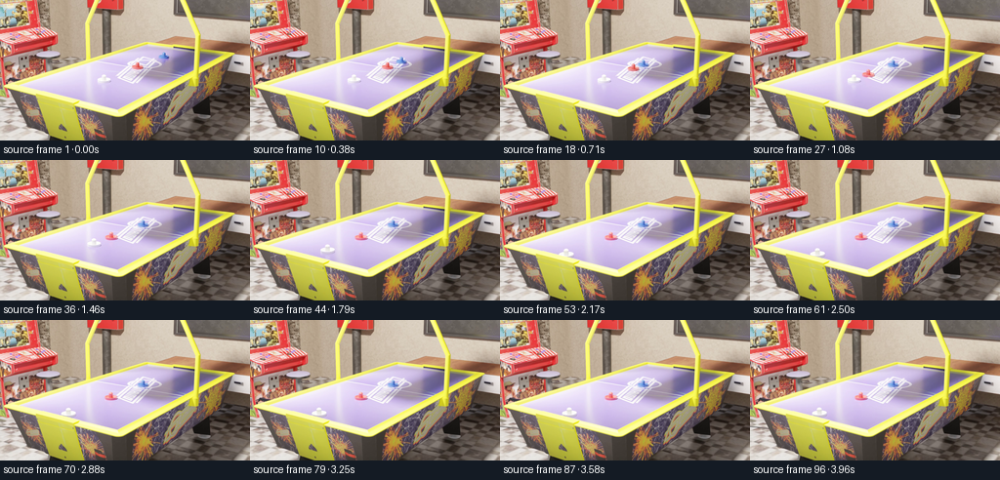
视觉工具实际返回图片 2
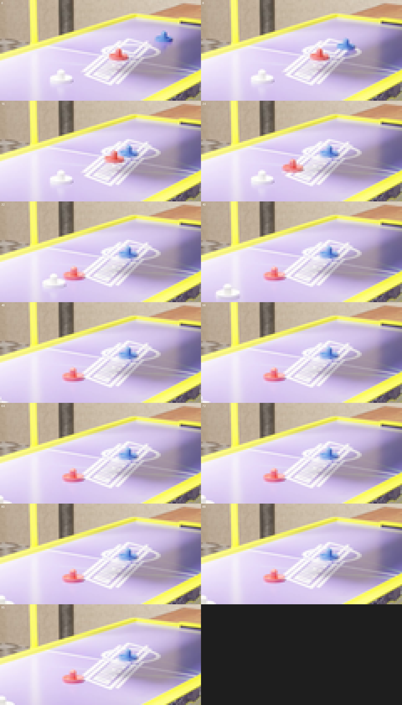
视觉工具实际返回图片 3
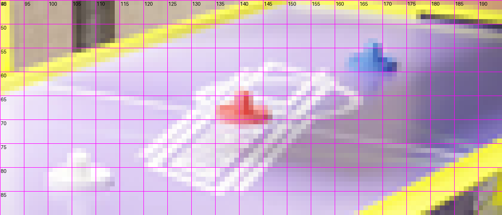
视觉工具实际返回图片 4
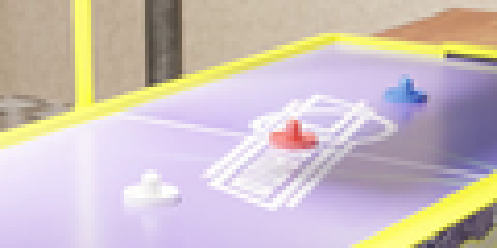
视觉工具实际返回图片 5

视觉工具实际返回图片 6

视觉工具实际返回图片 7
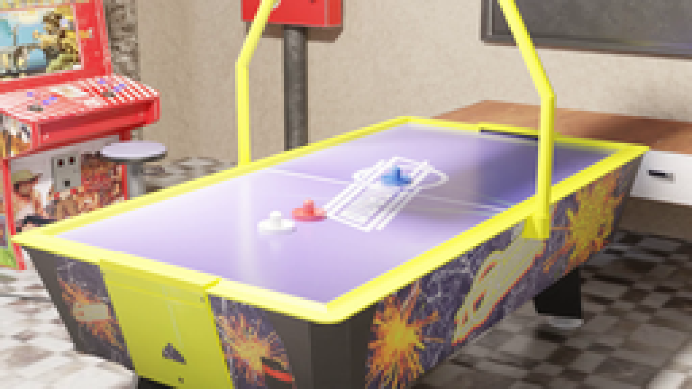
视觉工具实际返回图片 8
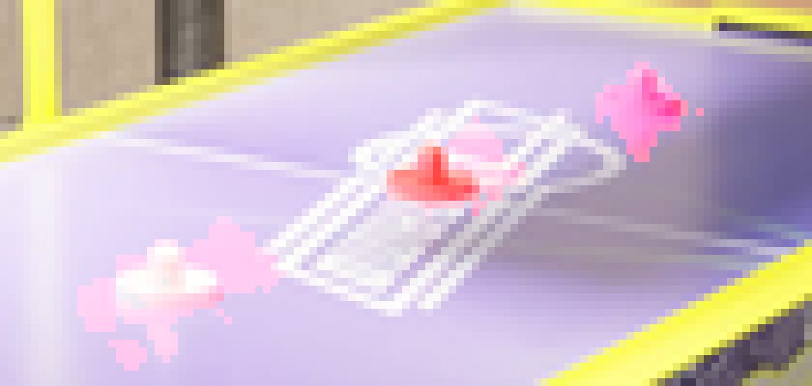
视觉工具实际返回图片 9
视觉工具实际返回图片 10
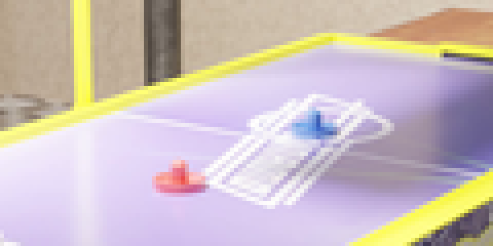
视觉工具实际返回图片 11
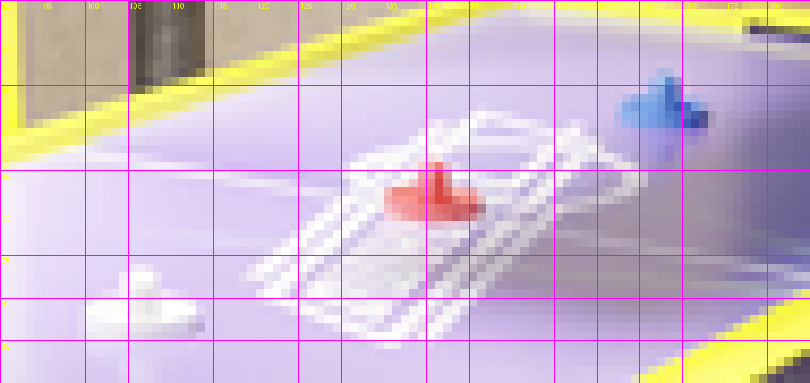
视觉工具实际返回图片 12
视觉工具实际返回图片 13
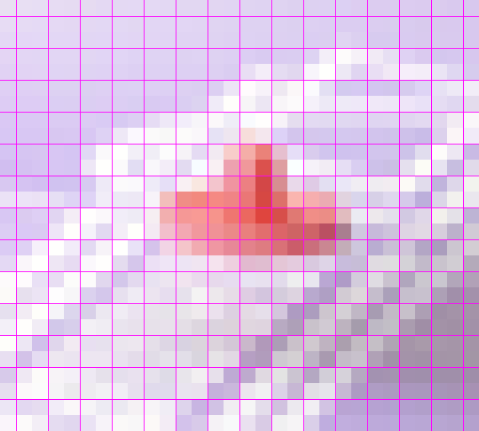
视觉工具实际返回图片 14
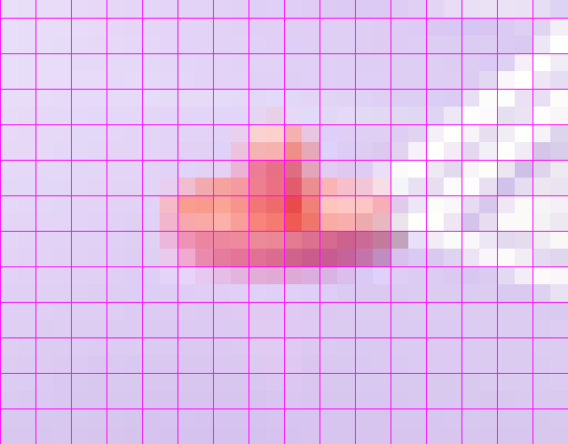
视觉工具实际返回图片 15
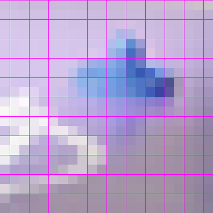
视觉工具实际返回图片 16
视觉工具实际返回图片 17

视觉工具实际返回图片 18
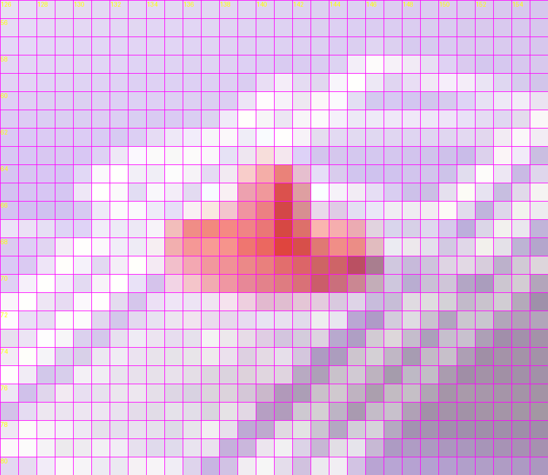
视觉工具实际返回图片 19
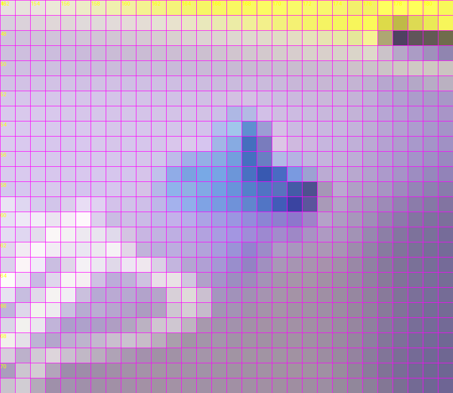
视觉工具实际返回图片 20

视觉工具实际返回图片 21
视觉工具实际返回图片 22
视觉工具实际返回图片 23
视觉工具实际返回图片 24

视觉工具实际返回图片 25
视觉工具实际返回图片 26
视觉工具实际返回图片 27
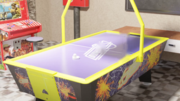
视觉工具实际返回图片 28
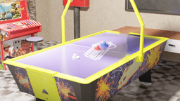
视觉工具实际返回图片 29
视觉工具实际返回图片 30
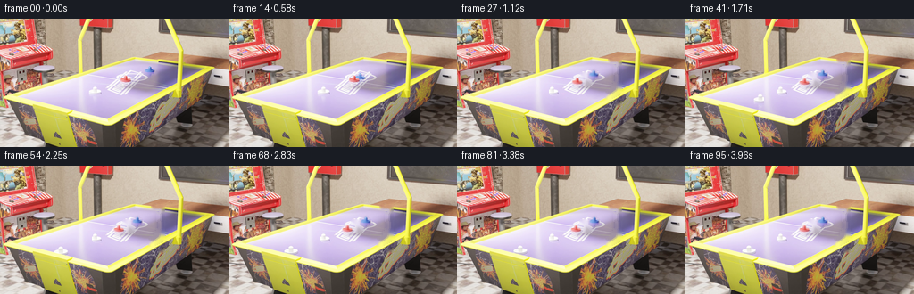
视觉工具实际返回图片 31
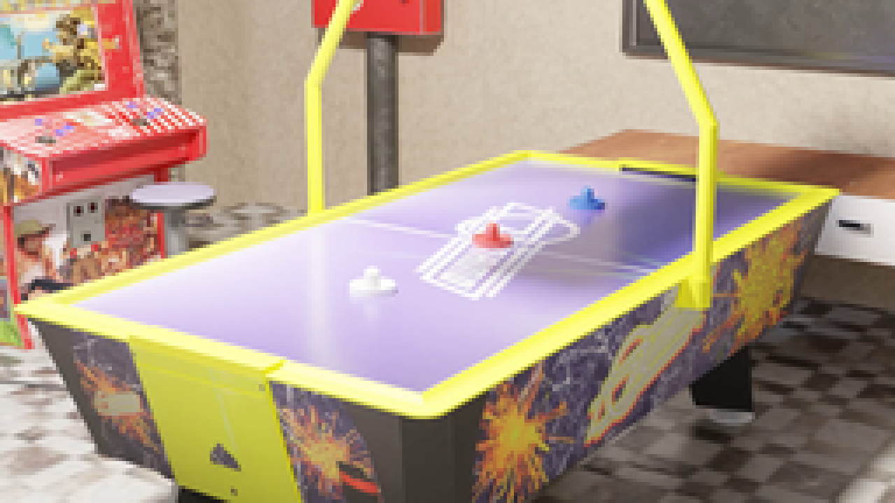
视觉工具实际返回图片 32
视觉工具实际返回图片 33
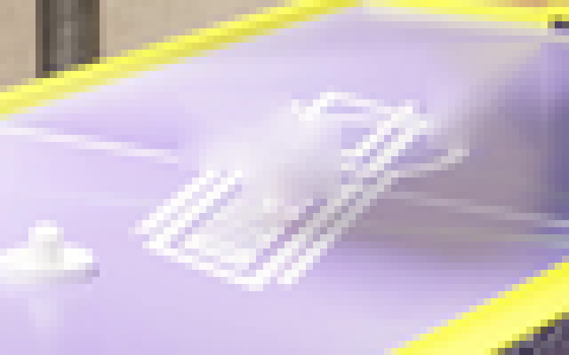
视觉工具实际返回图片 34

视觉工具实际返回图片 35
视觉工具实际返回图片 36
视觉工具实际返回图片 37

视觉工具实际返回图片 38
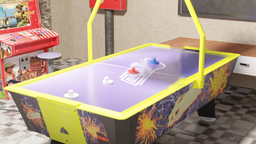
视觉工具实际返回图片 39
视觉工具实际返回图片 40
视觉工具实际返回图片 41

视觉工具实际返回图片 42
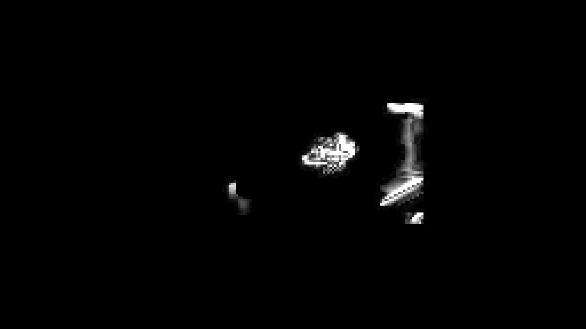
视觉工具实际返回图片 43
视觉工具实际返回图片 44
视觉工具实际返回图片 45
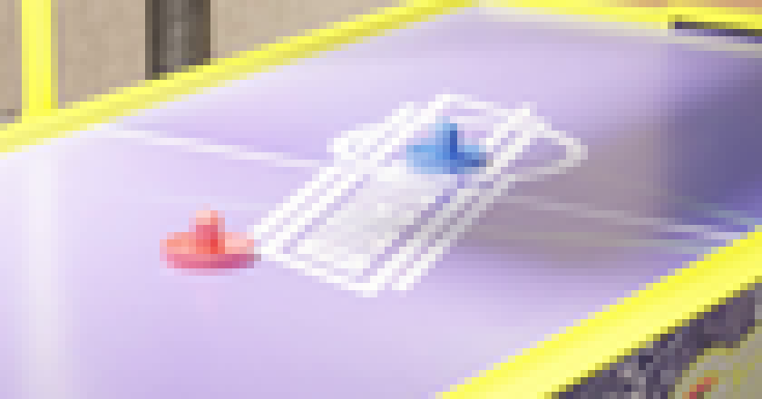
视觉工具实际返回图片 46
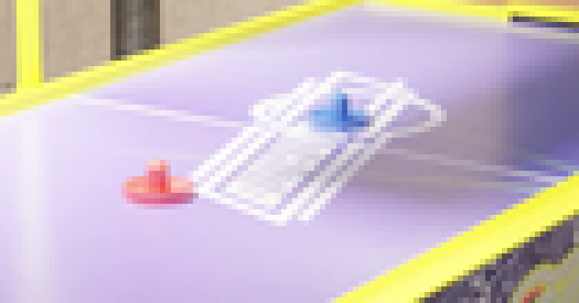
视觉工具实际返回图片 47
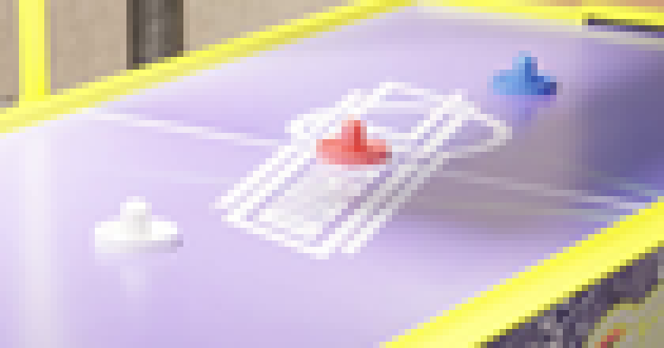
视觉工具实际返回图片 48
视觉工具实际返回图片 49
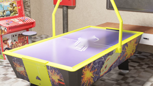
视觉工具实际返回图片 50
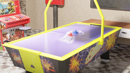
视觉工具实际返回图片 51
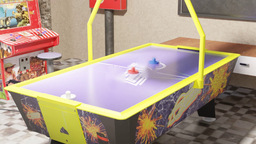
视觉工具实际返回图片 52
视觉工具实际返回图片 53

视觉工具实际返回图片 54
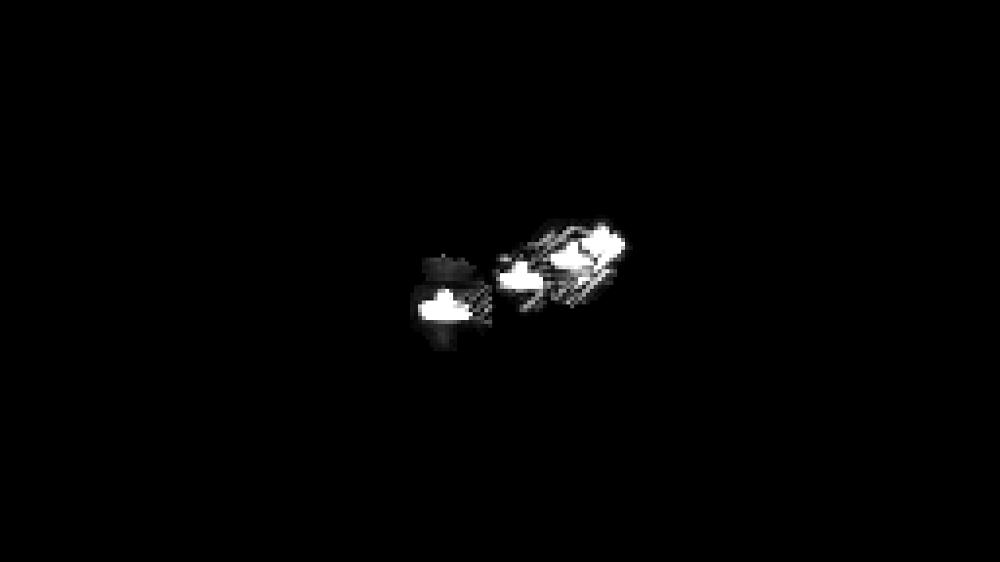
视觉工具实际返回图片 55
视觉工具实际返回图片 56
视觉工具实际返回图片 57
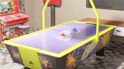
视觉工具实际返回图片 58
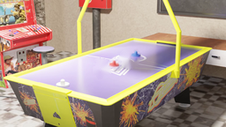
视觉工具实际返回图片 59
保存候选 5 份；完成命令 90 次；可验证图片返回 59 张。原始 API 响应与完整日志保留在本地。